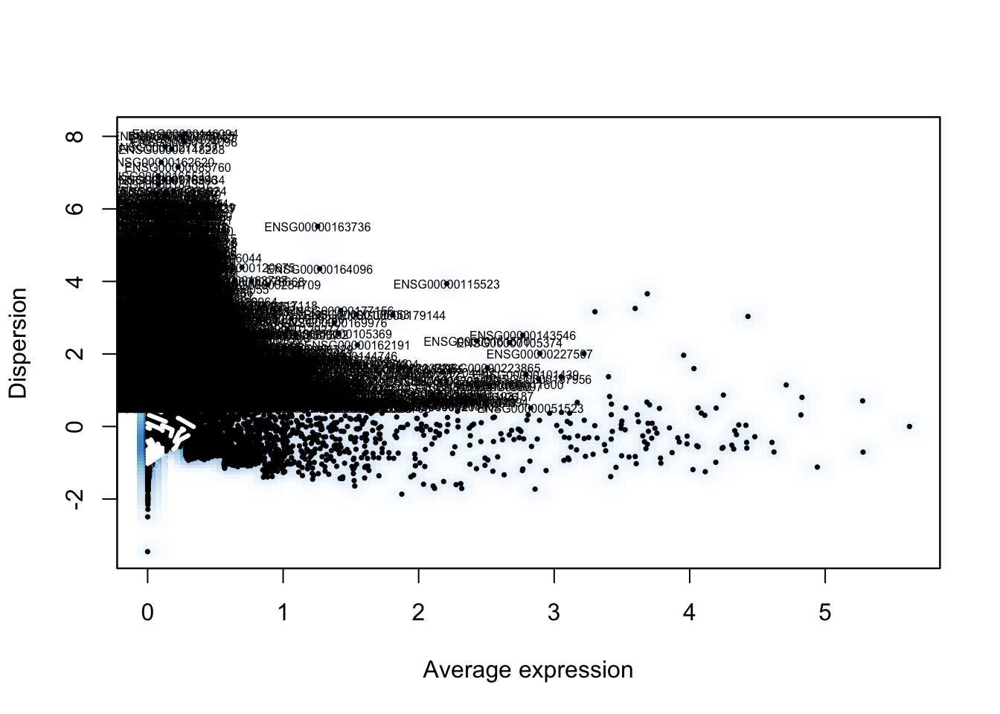
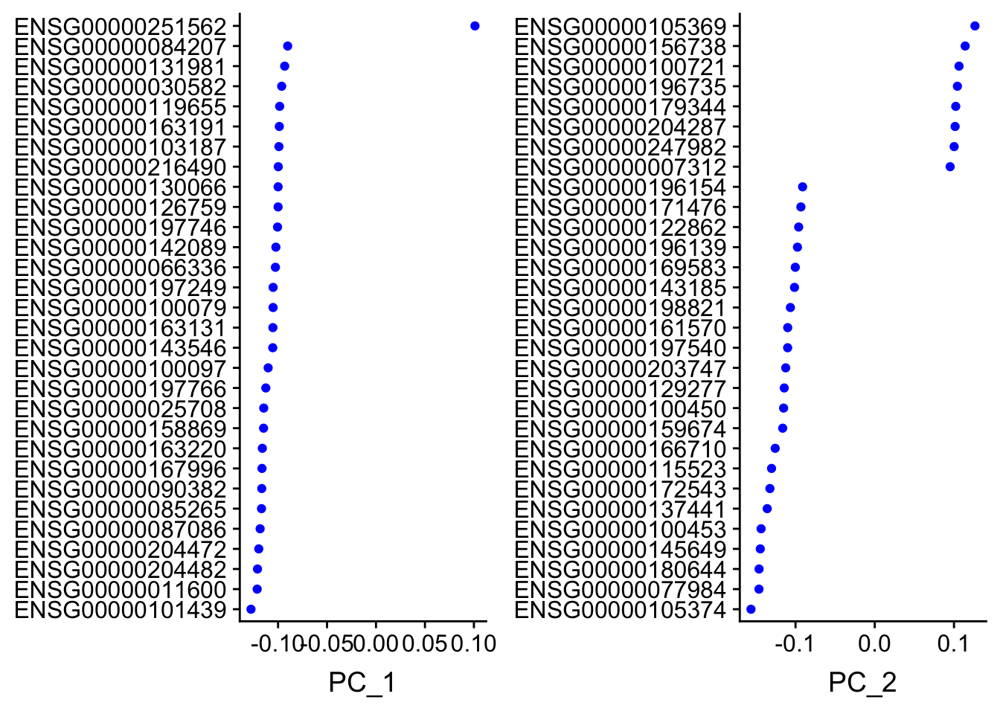
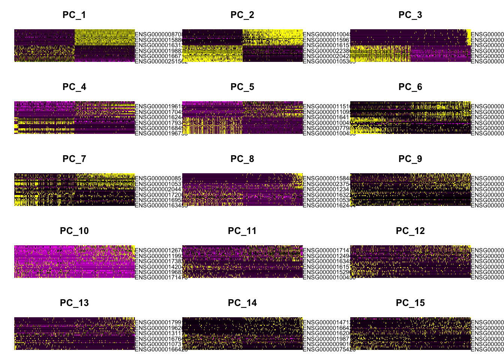

Seurat PBMC 3k tutorial using TENxPBMCData
Kevin Rue-Albrecht
14 January 2019
Overview
In this example, we use count data for 2,700 peripheral blood mononuclear cells (PBMC) obtained using the 10X Genomics platform, and process it following the Guided Clustering Tutorial of the Seurat package.
Getting the data
First, we fetch the data as a SingleCellExperiment object using the TENxPBMCData package. The first time the following code chunk is run may take longer, as the data is downloaded from the web and cached locally; subsequent evaluations of the code chunk should only take a few seconds as the data set is then loaded from the local cache.
library(TENxPBMCData)
tenx_pbmc3k <- TENxPBMCData(dataset="pbmc3k")## snapshotDate(): 2019-01-09## see ?TENxPBMCData and browseVignettes('TENxPBMCData') for documentation## downloading 0 resources## loading from cache
## '/Users/kralbrecht//.ExperimentHub/1607'tenx_pbmc3k## class: SingleCellExperiment
## dim: 32738 2700
## metadata(0):
## assays(1): counts
## rownames(32738): ENSG00000243485 ENSG00000237613 ...
## ENSG00000215616 ENSG00000215611
## rowData names(3): ENSEMBL_ID Symbol_TENx Symbol
## colnames: NULL
## colData names(11): Sample Barcode ... Individual Date_published
## reducedDimNames(0):
## spikeNames(0):Preparing the data
Next, we prepare a sparse matrix that emulates the first section of the Guided Clustering Tutorial.
library(Matrix)
pbmc.data <- as(counts(tenx_pbmc3k), "Matrix")
pbmc.data <- as(pbmc.data, "dgTMatrix")
colnames(pbmc.data) <- paste0("Cell", seq_len(ncol(pbmc.data)))
rownames(pbmc.data) <- make.unique(rowData(tenx_pbmc3k)[, "Symbol_TENx", drop=TRUE])Seurat - Guided Clustering Tutorial
From here on, follow the Guided Clustering Tutorial to the letter (code obtained on 2018-11-24).
library(Seurat)
library(dplyr)
# Initialize the Seurat object with the raw (non-normalized data). Keep all
# genes expressed in >= 3 cells (~0.1% of the data). Keep all cells with at
# least 200 detected genes
pbmc <- CreateSeuratObject(raw.data=pbmc.data, min.cells=3, min.genes=200, project="10X_PBMC")# The number of genes and UMIs (nGene and nUMI) are automatically calculated
# for every object by Seurat. For non-UMI data, nUMI represents the sum of
# the non-normalized values within a cell We calculate the percentage of
# mitochondrial genes here and store it in percent.mito using AddMetaData.
# We use object@raw.data since this represents non-transformed and
# non-log-normalized counts The % of UMI mapping to MT-genes is a common
# scRNA-seq QC metric.
mito.genes <- grep(pattern="^MT-", x=rownames(x=pbmc@data), value=TRUE)
percent.mito <- Matrix::colSums(pbmc@raw.data[mito.genes, ])/Matrix::colSums(pbmc@raw.data)
# AddMetaData adds columns to object@meta.data, and is a great place to
# stash QC stats
pbmc <- AddMetaData(object=pbmc, metadata=percent.mito, col.name="percent.mito")
VlnPlot(object=pbmc, features.plot=c("nGene", "nUMI", "percent.mito"), nCol=3)# GenePlot is typically used to visualize gene-gene relationships, but can
# be used for anything calculated by the object, i.e. columns in
# object@meta.data, PC scores etc. Since there is a rare subset of cells
# with an outlier level of high mitochondrial percentage and also low UMI
# content, we filter these as well
par(mfrow=c(1, 2))
GenePlot(object=pbmc, gene1="nUMI", gene2="percent.mito")
GenePlot(object=pbmc, gene1="nUMI", gene2="nGene")
# We filter out cells that have unique gene counts over 2,500 or less than
# 200 Note that low.thresholds and high.thresholds are used to define a
# 'gate'. -Inf and Inf should be used if you don't want a lower or upper
# threshold.
pbmc <- FilterCells(object=pbmc, subset.names=c("nGene", "percent.mito"),
low.thresholds=c(200, -Inf), high.thresholds=c(2500, 0.05))pbmc <- NormalizeData(object=pbmc, normalization.method="LogNormalize",
scale.factor=10000)pbmc <- FindVariableGenes(object=pbmc, mean.function=ExpMean, dispersion.function=LogVMR,
x.low.cutoff=0.0125, x.high.cutoff=3, y.cutoff=0.5)
length(x=pbmc@var.genes)## [1] 1838pbmc <- ScaleData(object=pbmc, vars.to.regress=c("nUMI", "percent.mito"))## Regressing out: nUMI, percent.mito##
## Time Elapsed: 11.0632710456848 secs## Scaling data matrixpbmc <- RunPCA(object=pbmc, pc.genes=pbmc@var.genes, do.print=TRUE, pcs.print=1:5,
genes.print=5)## [1] "PC1"
## [1] "CST3" "TYROBP" "FCN1" "LST1" "AIF1"
## [1] ""
## [1] "PTPRCAP" "IL32" "LTB" "CD2" "CTSW"
## [1] ""
## [1] ""
## [1] "PC2"
## [1] "NKG7" "GZMB" "PRF1" "CST7" "GZMA"
## [1] ""
## [1] "CD79A" "MS4A1" "HLA-DQA1" "TCL1A" "HLA-DQB1"
## [1] ""
## [1] ""
## [1] "PC3"
## [1] "PF4" "PPBP" "SDPR" "SPARC" "GNG11"
## [1] ""
## [1] "CYBA" "HLA-DPA1" "HLA-DPB1" "HLA-DRB1" "CD37"
## [1] ""
## [1] ""
## [1] "PC4"
## [1] "IL32" "GIMAP7" "AQP3" "FYB" "MAL"
## [1] ""
## [1] "CD79A" "HLA-DQA1" "CD79B" "MS4A1" "HLA-DQB1"
## [1] ""
## [1] ""
## [1] "PC5"
## [1] "FCER1A" "LGALS2" "MS4A6A" "S100A8" "CLEC10A"
## [1] ""
## [1] "FCGR3A" "CTD-2006K23.1" "IFITM3" "ABI3"
## [5] "CEBPB"
## [1] ""
## [1] ""# Examine and visualize PCA results a few different ways
PrintPCA(object=pbmc, pcs.print=1:5, genes.print=5, use.full=FALSE)## [1] "PC1"
## [1] "CST3" "TYROBP" "FCN1" "LST1" "AIF1"
## [1] ""
## [1] "PTPRCAP" "IL32" "LTB" "CD2" "CTSW"
## [1] ""
## [1] ""
## [1] "PC2"
## [1] "NKG7" "GZMB" "PRF1" "CST7" "GZMA"
## [1] ""
## [1] "CD79A" "MS4A1" "HLA-DQA1" "TCL1A" "HLA-DQB1"
## [1] ""
## [1] ""
## [1] "PC3"
## [1] "PF4" "PPBP" "SDPR" "SPARC" "GNG11"
## [1] ""
## [1] "CYBA" "HLA-DPA1" "HLA-DPB1" "HLA-DRB1" "CD37"
## [1] ""
## [1] ""
## [1] "PC4"
## [1] "IL32" "GIMAP7" "AQP3" "FYB" "MAL"
## [1] ""
## [1] "CD79A" "HLA-DQA1" "CD79B" "MS4A1" "HLA-DQB1"
## [1] ""
## [1] ""
## [1] "PC5"
## [1] "FCER1A" "LGALS2" "MS4A6A" "S100A8" "CLEC10A"
## [1] ""
## [1] "FCGR3A" "CTD-2006K23.1" "IFITM3" "ABI3"
## [5] "CEBPB"
## [1] ""
## [1] ""VizPCA(object=pbmc, pcs.use=1:2)
PCAPlot(object=pbmc, dim.1=1, dim.2=2)# ProjectPCA scores each gene in the dataset (including genes not included
# in the PCA) based on their correlation with the calculated components.
# Though we don't use this further here, it can be used to identify markers
# that are strongly correlated with cellular heterogeneity, but may not have
# passed through variable gene selection. The results of the projected PCA
# can be explored by setting use.full=T in the functions above
pbmc <- ProjectPCA(object=pbmc, do.print=FALSE)PCHeatmap(object=pbmc, pc.use=1, cells.use=500, do.balanced=TRUE, label.columns=FALSE)## Warning in heatmap.2(data.use, Rowv = NA, Colv = NA, trace = "none", col =
## col.use, : Discrepancy: Rowv is FALSE, while dendrogram is `both'. Omitting
## row dendogram.## Warning in heatmap.2(data.use, Rowv = NA, Colv = NA, trace = "none", col
## = col.use, : Discrepancy: Colv is FALSE, while dendrogram is `column'.
## Omitting column dendogram.## Warning in plot.window(...): "dimTitle" is not a graphical parameter## Warning in plot.xy(xy, type, ...): "dimTitle" is not a graphical parameter## Warning in title(...): "dimTitle" is not a graphical parameter
PCHeatmap(object=pbmc, pc.use=1:12, cells.use=500, do.balanced=TRUE,
label.columns=FALSE, use.full=FALSE)Small deviation from the tutorial. Skip the lengthy JackStraw computation.
# NOTE: This process can take a long time for big datasets, comment out for
# expediency. More approximate techniques such as those implemented in
# PCElbowPlot() can be used to reduce computation time
if (FALSE) {
pbmc <- JackStraw(object=pbmc, num.replicate=100, display.progress=FALSE)
JackStrawPlot(object=pbmc, PCs=1:12)
}PCElbowPlot(object=pbmc)# save.SNN=T saves the SNN so that the clustering algorithm can be rerun
# using the same graph but with a different resolution value (see docs for
# full details)
pbmc <- FindClusters(object=pbmc, reduction.type="pca", dims.use=1:10,
resolution=0.6, print.output=0, save.SNN=TRUE)PrintFindClustersParams(object=pbmc)## Parameters used in latest FindClusters calculation run on: 2019-01-13 15:53:47
## =============================================================================
## Resolution: 0.6
## -----------------------------------------------------------------------------
## Modularity Function Algorithm n.start n.iter
## 1 1 100 10
## -----------------------------------------------------------------------------
## Reduction used k.param prune.SNN
## pca 30 0.0667
## -----------------------------------------------------------------------------
## Dims used in calculation
## =============================================================================
## 1 2 3 4 5 6 7 8 9 10pbmc <- RunTSNE(object=pbmc, dims.use=1:10, do.fast=TRUE)# note that you can set do.label=T to help label individual clusters
TSNEPlot(object=pbmc)Save the seurat object
saveRDS(pbmc, file="pbmc3k_tutorial.rds")Save the equivalent SingleCellExperiment object
sce_pbmc <- as.SingleCellExperiment(pbmc)
saveRDS(sce_pbmc, file="pbmc3k_tutorial.sce.rds")Note that the marker genes used to later assign cell identities to the various clusters are listed below
## Markers and cell type annotations by cluster
# Cluster ID Markers Cell Type
# 0 IL7R CD4 T cells
# 1 CD14, LYZ CD14+ Monocytes
# 2 MS4A1 B cells
# 3 CD8A CD8 T cells
# 4 FCGR3A, MS4A7 FCGR3A+ Monocytes
# 5 GNLY, NKG7 NK cells
# 6 FCER1A, CST3 Dendritic Cells
# 7 PPBP Megakaryocytes